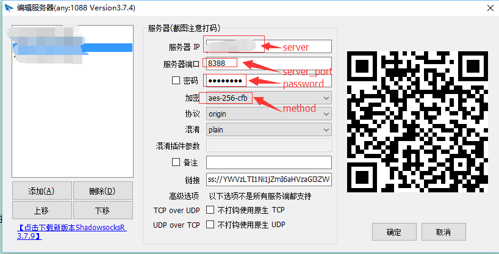

购买自己的VPS服务器
购买渠道
我就只在这两个网站上买过VPS.
第一个网站是搬瓦工，好处是可以支付宝支付。最低的包年配置啥的还能接受。搭个梯子，建个blog没啥问题。
第二个网站的包年vps的配置比搬瓦工的要好一点，而且价格差不多便宜一半。可惜是不能支付宝支付。
有了VPS后，在VPS上搭建ShadowSocks
shadowsocks 是一个轻量级隧道代理，用来穿过防火墙。
我的VPS机器安装的是CentOS系统、所以下面的操作都是以CentOS为准、当然你要是用RedHat也是一样的操作方式。
1.安装Setuptools
- 1.先下载Setuptools的egg安装包
- 2.然后设置运行权限
- 3.最后./运行
wget --no-check-certificate https://pypi.python.org/packages/2.6/s/setuptools/setuptools-0.6c11-py2.6.egg
chmod +x setuptools-0.6c11-py2.6.egg
./setuptools-0.6c11-py2.6.egg
2.安装Python-pip
由于一些第三方库需要用pip来安装所以要把Python-pip安装上。
wget --no-check-certificate https://pypi.python.org/packages/source/p/pip/pip-1.4.tar.gz
tar -zxvf ./pip-1.4.tar.gz
cd pip-1.4
sudo python setup.py install
3.安装Python-Gevent
为了提高性能Python-Gevent还是必须要安装的.
由于gevent需要用到libevent和python-devel所以我们需要现在这个.
在CentOS下可以用yum install libevent python-devel来安装
如果你的ubuntu的话可以用 apt-get来安装
yum install libevent
yum install python-devel
pip install gevent
4.安装Python-M2Crypto模块
M2Crypto是用于加密的第三库、由于众所周知的一些原因我们还是需要进行加密的。否则你的梯子可能不几天就被墙了。
首先需要先安装M2Crypto的一些依赖库
yum install openssl-devel
yum install swig
pip install M2Crypto
5.安装ShadowSocks-Python程序
ShadowSocks其实有很多版本可以选择的、这里我是选择了Python版本、当然你可以选择安装Shadowsocks-go、libev、libuv、nodejs、还有erlang版本。
pip install shadowsocks
6.创建config.json配置文件
ShadowSocks的配置文件你可以随便找个目录自己创建即可.在不同的目录下创建不同端口的config.json文件,然后分别启动.就会生成多个账号
mkdir ShadowSocks
cd ShadowSocks
vim config.json
config.json配置文件内容如下
{
"server":"my_server_ip",
"server_port":8388,
"local_port":1080,
"password":"barfoo!",
"timeout":600,
"method":"aes-256-cfb"
}
每一个字段的含义：
- server 服务器 IP (IPv4/IPv6)，注意这也将是服务端监听的 IP 地址
- server_port 服务器端口
- local_port 本地端端口
- password 用来加密的密码
- timeout 超时时间（秒）
- method 加密方法，可选择 "bf-cfb", "aes-256-cfb", "des-cfb", "rc4", 等等。默认是一种不安全的加密，推荐用 "aes-256-cfb"
7.运行ShadowSocks程序
在服务器上cd到config.json所在的目录。运行ssserver即可
ssserver
一般来说我们都让其在后台一直运行的，所以用如下命令即可。
nohup ssserver > log &
到此ShadowSocks-python服务端的所有安装设置都完成了下面我们需要用到客户端来操作。
8.下载客户端软件
这里不得不说下ShadowSocks做得如此之好、到底有多么的好、您能常见的系统都有客户端支持。 从Windows、Mac OS、Linux、Android、iOS、甚至支持OpenWRT。
Windows设置
下载
配置
去ShadowSocks官网下载ShadowSocks-gui客户端。解压之后运行exe程序,然后设置好我们前面在config.json里面设置的内容即可。
按照截图里进行填写

浏览器设置
如果是Chrome请使用Proxy SwitchyShar插件、如果是Firefox请使用AutoProxy插件。下面以Chrome为例来说明。
在 Proxy SwitchyShar中新建立一个SockS5代理。
设置完成之后、就没有之后了。开始翻越吧少年。